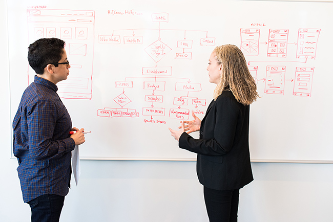

İlk milyonunu necə qazanmaq olar: ən uğurlu sahibkarlardan ən yaxşı tövsiyələr
Qazanmağa başlamağın ən sadə yolu – lazımi əlaqələr və tanışlıqlar qurmaqdır. Amma bu heç vaxt təsadüfən baş vermir. Faydalı əlaqələr dairəsi yaratmaq və həqiqətən gəlirli iş açmaq üçün müəyyən keyfiyyətlərə və vərdişlərə sahib olmaq lazımdır. Hansı keyfiyyətlər olduğunu izah edəcəyik.

Zəngin olmaq o qədər də çətin deyil, yollar çoxdur. Buna görə də uğurlu və zəngin insanlar arasında müxtəlif şəxsiyyətlər olur, bəzən hətta çox xoş olmayanlar da. Amma bu o demək deyil ki, bütün milyonerlər pis xarakterə və mənfi vərdişlərə malikdir. Onların arasında açıq, mehriban, ünsiyyətcil insanlar da çoxdur, kimlərlə istənilən kəs rahat ünsiyyət qura bilər. Ünsiyyətcilikdən başqa, digər vacib keyfiyyətlər də var: çalışqanlıq, praktik düşüncə, cəsarət və s. Bu məqalədə ilk milyonuna yaxınlaşmağa kömək edəcək ən yaxşı tövsiyələri topladıq.
Bir dəfə bir milyarder müsahibədə etiraf edib: əgər uğur yoluna sıfırdan başlamaq lazım olsaydı, mürəkkəb yollar axtarmazdı. Sadəcə haradasa beş yüz dollar tapıb yaxşı bir kostyum alardı. Bu kostyumla müxtəlif tədbirlərə gedərdi, orada uğurlu sahibkarlarla tanış ola bilərdi. Onlardan biri ona arzusundakı işi təklif edərdi və ya faydalı məsləhət verərdi.
Başqa bir sahibkar, satışda böyük uğur qazanan, uğur sirrini açıqlayıb. Onun əsas səbəbi Dale Carnegie’nin «Dostlar qazanmaq və insanlara təsir etmək» kitabı olub. Biznesmen ilkin kapitalını limuzin sürücüsü işləyərək əldə edib. Sadəcə kitabdakı məsləhətləri praktikada tətbiq edib. Məsələn, insanlara qısa cavab tələb edən suallar vermirdi. «Siz harada işləyirsiniz?» əvəzinə soruşurdu: «Siz nə işlə məşğulsunuz?». Hər kəs özündən danışmağı sevir. Buna görə müştərilər sürücü ilə məmnuniyyətlə ünsiyyət qurur və səxavətli bahşiş verirdilər.
Ünsiyyət – uğurun açarıdır, bütün aparıcı dünya şirkətlərinin sahibləri belə düşünür. Yardım və yaxşı məsləhətlər birdən-birə başına düşmür. Amma düzgün insanlarla əlaqə qurduqda mütləq gəlir. Onlarla ortaq dil tap – və onlar özü faydalı və vacib bir şey təklif edəcəklər. Bu, uğura daha tez çatmağına kömək edəcək.
Bəs necə olmaq olar ki, zəngin və uğurlular üçün maraqlı insan olasan? Və özü bu statusa yaxınlaşsın? Bir neçə sirr var ki, həm doğma liderlər, həm də hələ liderlik bacarığını inkişaf etdirməmiş insanlar üçün uyğundur.
1. Öyrənməyi dayandırma

Yeni biliklər və təzə ideyalar əldə etmək davamlı olmalıdır. Müasir ən uğurlu biznesmenlər hamısı tövsiyə edir ki, uğurlu insanların təcrübəsi barədə oxuyub dinləyəsən. Non-fikşn ədəbiyyatı, hikmət, ünsiyyət bacarıqları və digər faydalı keyfiyyətləri öyrədən kitabları görməzdən gəlmək olmaz. Dollar milyarderi Mark Kyuban hesab edir ki, yaxşı kitab almaq ən yaxşı sərmayədir və həmişə özünü doğruldur. Dropbox-un baş direktoru Drew Hyuston isə hər həftəsonu biznes kitablarını oxumağa vaxt ayırdığını bildirir.
2. Öz üzərində çalış

Ağıllı, təşəbbüskar və yaradıcı insanlarla ünsiyyət qurmaq üçün sən də özün belə olmağa çalışmalısan. Artıq qeyd edildiyi kimi, daha çox öyrənmək, oxumaq, əldə olunan məlumatları analiz etmək və faydalı təcrübəni mənimsəmək lazımdır. Özünü layiqli insanlarla əhatə etmək və davamlı öz üzərində işləmək vacibdir ki, belə bir ünsiyyət dairəsinə uyğunlaşasan.
3. Sadəcə işlə

Pulun dərhal üzərinə gəlməsini gözləmə. Əvvəl yaxşı işləmək lazımdır. Çalışqanlıq çox vacib xüsusiyyətdir. Komanda daxilində işləmə bacarığı da önəmlidir. Öz eqonu unudub komandanın ayrılmaz hissəsi ol. Ən yaxşı nəticələrə nail olmağa çalış və gələcək üçün işləy, ani zənginlik üçün yox.
4.Risk et

Heç vaxt risk etməkdən qorxma. Hər maraqlı fürsətə şans verməyə çalış. Heç vaxt bilmirsən hansı biri uğura aparacaq. Həmçinin bu, hər zaman yaxşı təcrübədir. Riskdən qorxmayanlara daha çox hörmət edilir. Əlbəttə, hər vəziyyətdə düşünmədən həvəsə qapılmaq olmaz. Amma tez-tez risk etmək sadəcə zəruridir.
5.Uyğun işi tap

Həqiqətən perspektivli sahəni seçmək lazımdır. Belə bir sahə seç ki, potensialını tam reallaşdıra biləsən. Həmçinin qazanc imkanı olan sahə olsun. Ona görə aktual və müasir sahəni seç.
6.Şirkəti yaxşı seç
Şübhəli bir firmada yüksək vəzifə ilə, prestijli bir şirkətdə aşağı vəzifə arasında seçim edərkən, ikinciyə üstünlük ver. Etibarlı, nüfuzlu şirkət sənin CV-n üçün ən yaxşı seçimdir. Həm də belə şirkətlər əməkdaşlarına karyera yüksəlişi və digər imkanlar təqdim edir.
7. Ekspert ol
Daha çox fürsət açmaq üçün sahəni yaxşı mənimsə. Maksimum məlumat öyrən və onu başqaları ilə paylaş. Məsələn, mövzu ilə bağlı bloqda məqalələr, postlar və ya videolar vasitəsilə. Sosial şəbəkələr eyni fikirdə olan insanlarla əlaqə qurmağa kömək edəcək.
8.Bir neçə gəlir mənbəyi tap

Öz işini açmaq üçün kifayət qədər kapital lazımdır. Bir işdə işləyərək bunu toplamaq çətindir. Daha çox necə qazana biləcəyini düşün.
Birincisi, bunu bloq, konsultasiya, təlimlər vasitəsilə etmək olar. İkincisi, investisiyalar vasitəsilə. Ola bilsin ki, sən müəyyən xidmətlər göstərəsən. Müxtəlif yollar axtar.
9.Pul xərcləmə

Gəliri artırmaq üçün xərcləri azaltmaq lazımdır. Az da olsa, amma mütəmadi yığıb saxla. Maksimum diqqət və enerjini özünü inkişaf etdirməyə yönəlt ki, pulu boş yerə xərcləməyə vaxt qalmasın.
10.Uğura inan

Heç bir şey mümkünsüz deyil. Buna mütləq inan. Uğurlu sahibkarların nə qazandığına baxmaq əvəzinə, onların necə qazandığına bax. Görəcəksən ki, hamısı eyni çətinliklərdən keçib.
Heç kim dərhal minlərlə işçisi və milyonlarla dollarlıq dövriyyəsi olan böyük müəssisə ilə başlamayıb. Bəziləri, məsələn, Erik Şmidt və ya Stiv Ballmer illərlə eyni şirkətdə işləyib, sonra onu idarə ediblər. Digərləri, Richard Branson və Michael Dell, ilk məhsullarını poçtla və ya yataqxanada satıblar. Böyük Walmart şəbəkəsi kiçik bir kənd dükanından başlayıb.